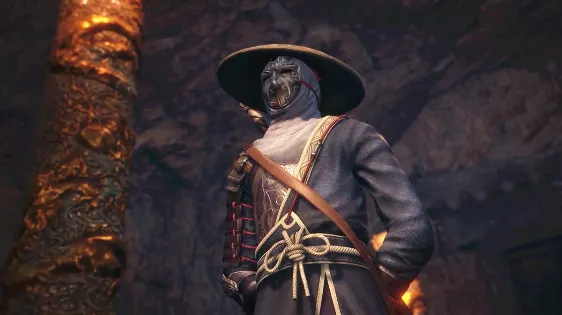
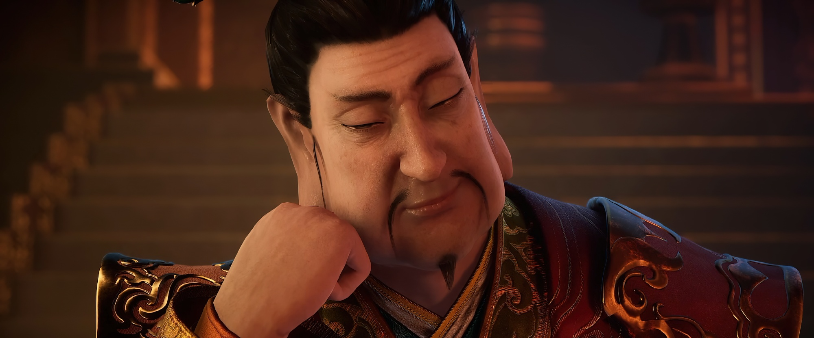
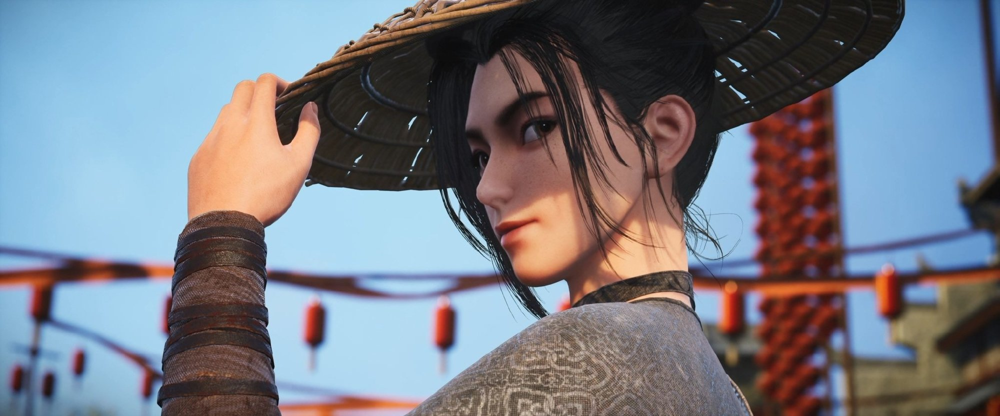
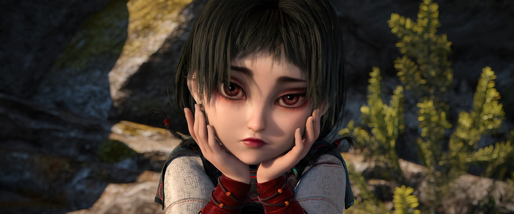
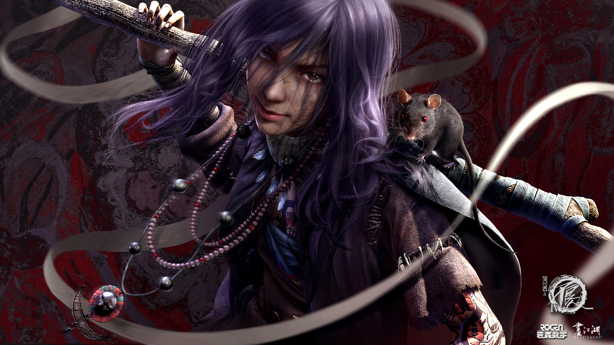
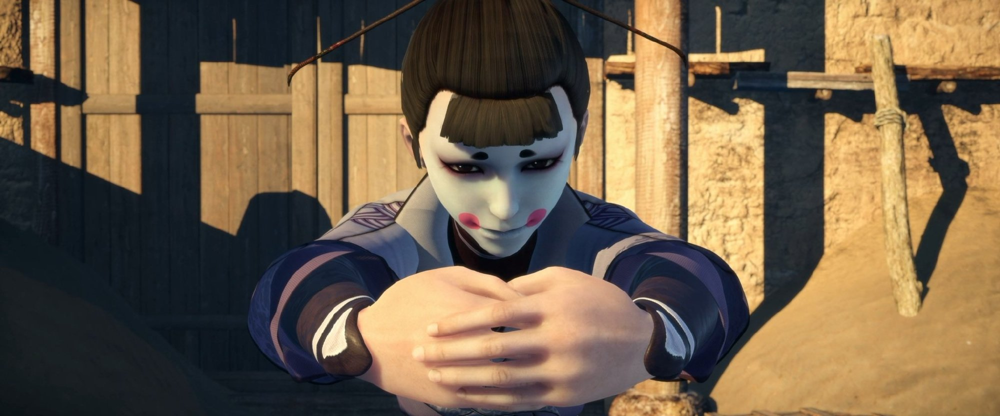

李星云
李星云是唐昭#画江湖#宗李晔之子，小时候惨遭 灭门之祸，家里只有哥哥和他幸存，无奈只好和李焕流落江湖，
时年九岁被阳叔子救下，在剑庐中过着无忧无虑的出世生活。自此跟着阳叔子学习医术，匡扶救人，跟着不良帅学习武学，
然而一次意外打破了这平静的生活，因为隐匿的龙泉剑和剑中关于宝藏的秘密被江湖各方所觊觎，师傅也惨遭杀害，
因此与师妹陆林轩离开剑庐行走江湖。后结识幻音坊侍女姬如雪和通文馆少主张子凡，因身负龙泉剑，使其身世败露，
引来各方势力追杀。后与姬如雪张子凡化敌为友共闯江湖。

袁天罡
大唐国师，不良人最高首领，自身实力无上境界，集所有人也无法战胜的恐怖存在。只有历代皇帝才知晓他的真实身份是太宗年间的道士袁天罡。他凭借丹药获得长生不老，太宗皇帝不愿袁天罡一身本事埋没便组建暗中组织不良人袁天罡为首领专供大唐君王驱使。在李星云年幼时，暗中教授其武艺。李星云出山后，凭借武力要挟幻音坊与通文馆协助李星云复国。为人冷血无情，但是对李唐王室忠心耿耿，一心想恢复唐朝统治，以此来胜了和挚友李淳风的赌局。
姬如雪是动画《画江湖之不良人》系列中的女主角。
原是战乱亲散的一名百姓。后被女帝收养成为幻音坊的侍女，奉命寻找火灵芝，却遭到玄冥教教众围攻，而后为李星云所救，隐约间心生爱意。后又奉命夺取龙泉剑，被不良人劫到藏兵谷，再次被李星云所救，心生爱慕。妙成天与玄净天奉命前来服侍李星云时，显得有些吃醋，也恰恰表明了她对李星云的心意。肤白貌美是个冰美人，但在李星云面前会脸红害羞，时常流露出少女娇俏任性的一面。

李嗣源一袭白衣儒生打扮，貌似温文尔雅，彬彬有礼，实则为人阴险狡诈，做事心狠手辣，常借刀杀人，自己从不轻易动手，在第五季中已称监国，先假借天子名义绞杀不良人，后欲用火药炸毁太原城来摧毁李唐龙脉以确保自己登基无误。

洛小北是《画江湖之不良人第五季》登场的不良人一员，师傅是三十六天罡之一的段成天，因被监国李嗣源追杀而认识姬如雪与李星云

阿姐玄冥教四大尸祖之一，称号：冥海无岸。多年前与其他三位尸祖一同帮助冥帝建立玄冥教。
萤勾是侯卿的姐姐，但与阿姐并非同一个人。多年前，萤勾修炼功法，走火入魔，体内莫名多了一个人出来，从此自称阿姐，“阿姐”的出现让萤勾的身体一夜之间变成了孩童。萤勾离开玄冥教以后到处寻求解决之法，此症暂无人能解。于是萤勾恼怒避世，将身体让给“阿姐”，当遭遇危险时，萤勾才会苏醒，且实力强大不凡。 [1]
与弟弟侯卿关系极好，即使跟弟弟胡闹，弟弟也会保护她。

鲜参鲜参是动画《画江湖之不良人》系列中的女性角色。
万毒窟虺王蚩离的妻子，蚩梦的母亲。原本隶属十二峒，后因引蚩笠、蚩离兄弟二人到十二峒学习兵神怪坛禁法违背了十二峒“避世”的守则，被十二峒放逐至死溪林，功力不凡，十分强大。尤擅御蛊，发动蛊术时老鼠铺天盖地，威力巨大。虺王恢复之后前去十二峒面见二峒主李偘，在得到李偘没有任何人会因她离开死溪林而死的承诺之后离开死溪林帮助主角。后和蚩离掩护主角和女儿撤退，将蚩梦托付给了李星云后，与蚩离等人大战蚩笠的兵神怪坛大军，最终与蚩离一起壮烈牺牲。

镜心魔镜心魔是动画《画江湖之不良人》系列中的角色，其原型为五代十国时期的历史人物伶官敬新磨。
李存勖身边一个得宠的小丑伶人，小丑般的面貌，滑稽搞笑，颇有心机。言谈间随时附和李存勖，也替李存勖出谋划策。其真实身份于第三季末揭示，实为不良人的天罪星，为不良帅在晋国以及李存勖身边安插的卧底。
曾与李存勖一起前往拜日古城寻找龙泉宝藏，在漠北伏击李星云等人。后率众伶人刺死了李存勖。